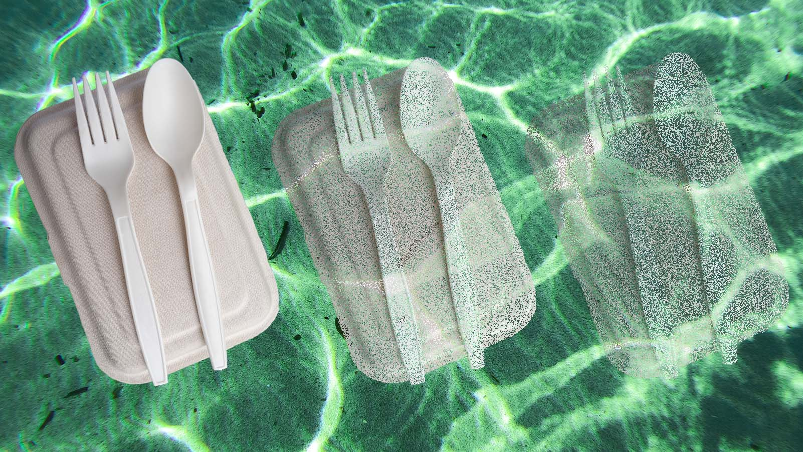
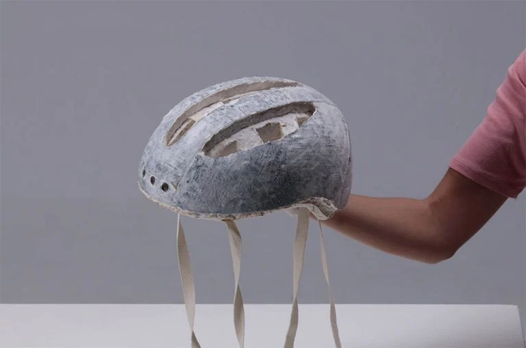

Plastico e Sustentabilidade
LMateriais sustentáveis como bioplástico, micélio e fibra moldada (pulp) surgem como alternativas viáveis aos plásticos tradicionais por reduzirem o impacto ambiental sem comprometer totalmente custo e produção em escala. Eles permitem criar embalagens resistentes, leves e funcionais, alinhadas com a proposta de reutilização como acessório, além de diminuírem a geração de resíduos e a dependência de derivados de petróleo, o que torna o ciclo de vida do produto mais eficiente e coerente com práticas industriais mais sustentáveis.

Bioplastico
O bioplástico é uma alternativa interessante por manter características muito próximas ao plástico convencional, como flexibilidade, resistência e acabamento visual de qualidade, o que é essencial para produtos como capinhas de celular e docks de mouse. Produzido a partir de fontes renováveis, ele pode reduzir significativamente a pegada de carbono e ainda se encaixa bem em processos industriais já existentes, facilitando a adoção em larga escala sem exigir mudanças drásticas na produção.

Fibra Moldada
A fibra moldada (pulp), feita a partir de papel reciclado, é uma opção de baixo custo e amplamente utilizada, com boa capacidade de absorção de impacto e fácil reciclagem. Apesar de não ter o mesmo apelo visual ou durabilidade para uso prolongado como acessório, ela pode ser adaptada para aplicações internas ou combinada com outros materiais, contribuindo para reduzir o uso de plásticos e melhorar a sustentabilidade geral da embalagem.ur.

Micélio
O micélio, derivado de fungos, oferece uma solução inovadora e altamente sustentável, sendo cultivado em moldes para formar estruturas rígidas e biodegradáveis. Ele é especialmente eficiente para absorção de impacto, o que o torna ideal para proteção interna de produtos maiores, como laptops, embora ainda enfrente limitações em acabamento e aparência, o que pode restringir seu uso em partes visíveis do produto.